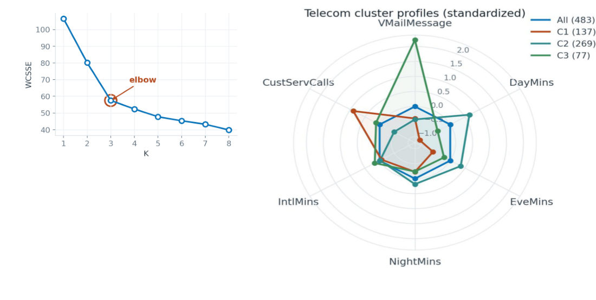
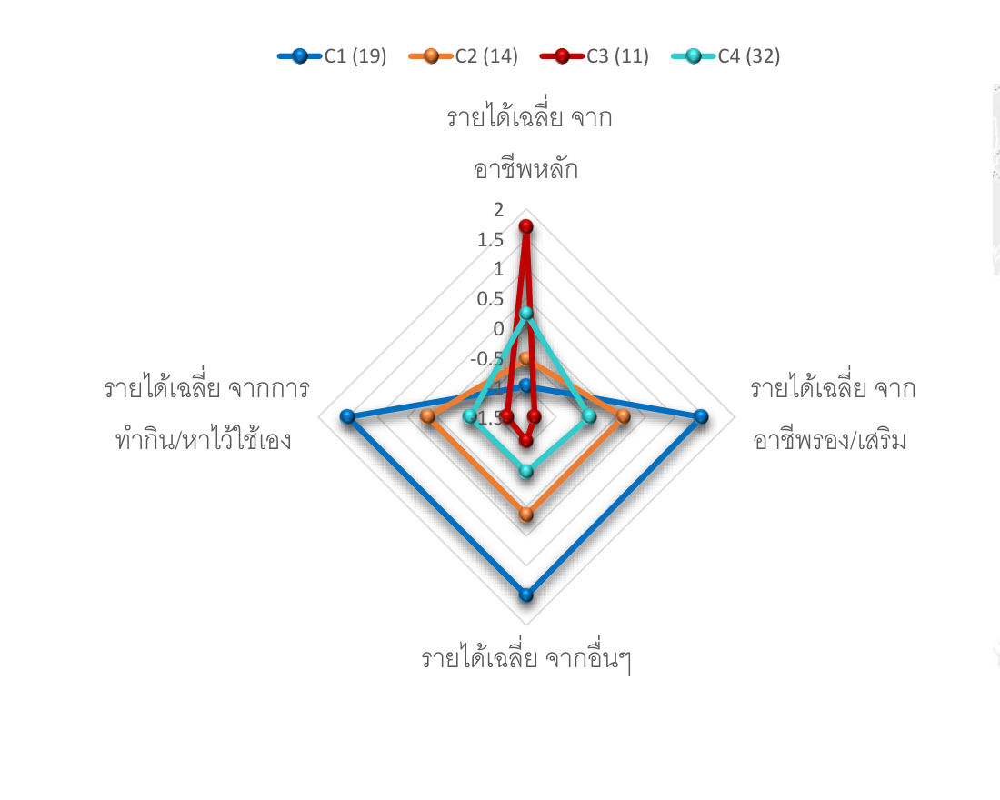
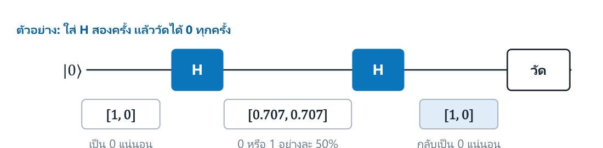
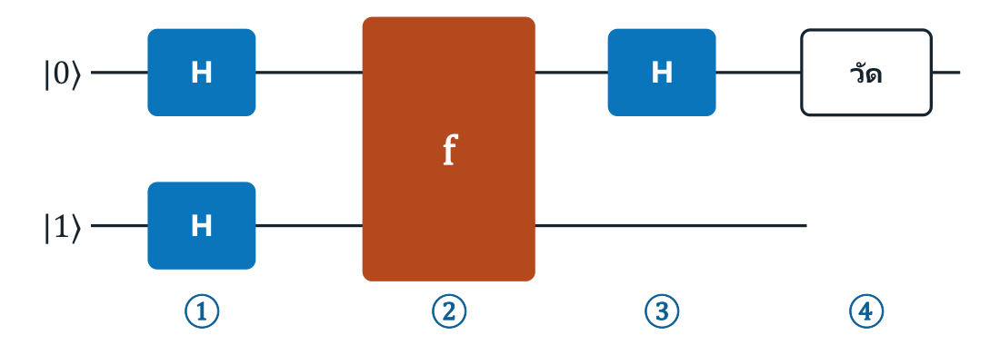
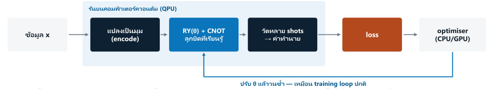

| โจทย์ | สูตร/วิธี | หน้า |
|---|---|---|
| Perceptron update | e=y−ŷ, Δw=η·e·x (ทายถูก Δ=0) | 2 |
| Adaline / SGD 1 ก้าว | e=y−z, w ← w + η·e·x | 3 |
| K-Means 1 รอบ + SSE | assign ใกล้สุด → mean → Σ‖x−μ‖² | 5 |
| Silhouette | s=(b−a)/max(a,b) | 6 |
| Linkage single/complete/avg | min / max / mean ของระยะคู่ | 6 |
| DBSCAN core/border/noise | นับเพื่อนใน eps (นับตัวเอง) | 6 |
| PCA projection | z = (x−x̄)·PC1, recon = z·PC1 + x̄ | 7 |
| Markov 2 วัน | รวมทุกเส้นทาง (แถวของ P²) | 8 |
| Return G | G=r+γG′ (ไล่จากท้าย) | 8 |
| Logistic policy | z=w·s, σ(z)>0.5 → ขวา | 9 |
| Q-learning update | Q+=α[r+γmaxQ′−Q] | 9 |
| ε-greedy | P(best)=1−ε+ε/|A| | 9 |
| Convolution 1 ค่า | Σ (x·w) + b | 11 |
| Output size / #params | O=(I−K+2P)/S+1 · (K²Cin+1)Cout | 11–12 |
| TF-IDF / cosine | tf·ln(N/df) · u·v/(‖u‖‖v‖) | 14 |
| RNN 1 ขั้น | h=tanh(Whh·h+Wxh·x+b) | 15 |
| Attention / softmax | softmax(QKᵀ/√dk)V | 15–16 |
| Temperature / top-p | exp(z/T)/Σ · สะสมจน ≥ p | 16–17 |
| Majority vote / pⁿ | ΣC(n,k)pᵏ(1−p)ⁿ⁻ᵏ · pⁿ | 17–18 |
| Qubit / 2 qubit | P(0)=|α|² · kron · ⟨Z⟩=P0−P1 | 19 |
| คู่คำ | ต่างกันที่ |
|---|---|
| Perceptron vs Adaline | error คำนวณ หลัง step (ทายผิดเท่านั้น) vs ก่อน step (ค่าต่อเนื่อง z → มี gradient) |
| Epoch vs Iteration | วนครบข้อมูล 1 รอบ vs อัปเดต 1 ครั้ง (1 batch) |
| Parameter vs Hyperparameter | w, b เรียนรู้เอง vs η, K, ε, eps ผู้ใช้ตั้ง |
| K-Means vs DBSCAN | ต้องระบุ K, ทุกจุดมีกลุ่ม vs หา K เอง, มี noise (−1) |
| Clustering vs PCA | หากลุ่ม vs ลดมิติ (PCA ไม่ใช่ clustering ไม่ใช้ label) |
| Value-based vs Policy-based | เรียน Q แล้ว argmax vs ปรับ π โดยตรงจาก Return |
| terminated vs truncated | จบจริง (ไม่ bootstrap) vs ตัดเวลา (ยัง bootstrap) |
| Semantic vs Instance seg. | label ต่อ pixel (ไม่นับวัตถุ) vs mask ต่อวัตถุ (นับได้) |
| BERT vs GPT vs T5 | encoder (เติมช่องว่าง) vs decoder (คำถัดไป) vs enc–dec (text-to-text) |
| SFT vs RLHF vs DPO | ตัวอย่างคำสั่ง vs reward model+PPO vs เรียนจากคู่ความชอบตรง ๆ |
| RAG vs Fine-tune (LoRA) | เติมความรู้ผ่าน prompt (ไม่แก้น้ำหนัก) vs ปรับน้ำหนักบางส่วน |
| CQ vs QC (QML) | ข้อมูลคลาสสิกบนชิปควอนตัม vs ML คลาสสิกช่วยสร้างชิปควอนตัม |
| One-stage vs Two-stage det. | YOLO/SSD เร็ว real-time vs RPN เสนอกล่องก่อน (Faster R-CNN) แม่นกว่า |
| Static vs Contextual emb. | word2vec 1 จุดต่อ 1 คำ vs Transformer 1 จุดต่อ 1 การใช้ (แก้ “bank”) |
| Zero-shot vs Few-shot | ไม่มีตัวอย่างคลาสใหม่ (CLIP/คำสั่ง) vs มี 1–5 ตัวอย่าง (prototype / ตัวอย่างใน prompt) |
| CoT vs Self-consistency vs ToT | คิดเส้นเดียว vs หลายเส้นแล้วโหวต vs ค้นหาบนต้นไม้ + ประเมิน + ย้อนกลับ |
| ORM vs PRM | ให้รางวัลเฉพาะคำตอบสุดท้าย vs ให้คะแนนทุกขั้นของเหตุผล |
L06 = โมเดลที่ “เขียนกฎเป็นเงื่อนไข” · L07 = เลือก/วัดผลโมเดลสำเร็จรูป · L08 เปิดกล่องโมเดลที่ “เรียนรู้ด้วยการปรับน้ำหนักทีละนิด” = รากฐานของ Deep Learning ทั้งหมด
เซลล์ชีวภาพ: Dendrites รับสัญญาณ → Soma (cell body) รวมสัญญาณ → ถ้าเกิน threshold จะ “fire” → ส่งผ่าน Axon → Synapse ไปเซลล์ถัดไป
คุณสมบัติ: All-or-none (fire เต็มหรือไม่ fire เลย) · Binary output (0/1 เท่านั้น) · Threshold-based (fire เมื่อ input ถึง θ) · MCP ยังไม่มีกฎการเรียนรู้ — w, θ ต้องกำหนดเอง
| x | x₁ | x₂ | z = w₁x₁+w₂x₂ | f(z) |
|---|---|---|---|---|
| x⁽¹⁾ | 3 | 2 | −0.018−0.010 = −0.028 | 0 |
| x⁽²⁾ | 4 | 4 | −0.024−0.020 = −0.044 | 0 |
| x⁽³⁾ | 5 | 0 | −0.030 | 0 |
| x⁽⁴⁾ | 7 | 1 | −0.042−0.005 = −0.047 | 0 |
| MCP (1943) | Perceptron (1957) | |
|---|---|---|
| Output | 0 / 1 | +1 / −1 |
| เกณฑ์ | z ≥ θ | z = wᵀx + b ≥ 0 (b = −θ) |
| การเรียนรู้ | ไม่มี (ตั้ง w เอง) | ปรับ w เมื่อทายผิด |
| ขอบเขต | เส้นตรง | เส้นตรง (แยกได้เฉพาะ linearly separable) |
| y | ŷ | y − ŷ | ผล |
|---|---|---|---|
| +1 | +1 | 0 | ทายถูก → ไม่ปรับ |
| −1 | −1 | 0 | ทายถูก → ไม่ปรับ |
| −1 | +1 | −2 | ทายผิด → ปรับ (z ควรลดลง) |
| +1 | −1 | +2 | ทายผิด → ปรับ (z ควรเพิ่มขึ้น) |
update = eta*(target − predict), w += update*xi) และตำรามาตรฐานใช้ บวก (จะได้ w₁ = −16.5) · ถ้าโจทย์ให้ “ทำตามสไลด์” ใช้สูตรสไลด์ · ถ้าถามหลักการ: ทายผิดฝั่งลบ (y=−1) ต้อง ลด z → กฎมาตรฐานถูกต้อง · ส่วน Adaline (หน้า 20–26) สไลด์ใช้เครื่องหมาย + ตามมาตรฐาน| x₁ glucose | x₂ BMI | y | x₁ | x₂ | y |
|---|---|---|---|---|---|
| 148 | 33.6 | 1 | 180 | 40.2 | 1 |
| 85 | 26.6 | −1 | 100 | 24.0 | −1 |
| 160 | 35.0 | 1 | 130 | 30.1 | 1 |
| 90 | 22.5 | −1 | 70 | 21.0 | −1 |
เริ่มต้น: η = 0.1 · w₁ = 0.5 · w₂ = 0.5 · b = 0.5
ผล Lab (Iris setosa vs versicolor): errors ลดเป็น 0 ที่ epoch 6 · บนข้อมูลที่ซ้อนทับกันจะไม่มีวันถึง 0
| Perceptron | Adaline | |
|---|---|---|
| Activation ตอนเรียน | step (+1/−1) | identity f(z)=z |
| error คิดจาก | y − ŷ (หลัง step: 0, ±2) | y − f(z) (ต่อเนื่อง) |
| อัปเดตเมื่อ | ทายผิดเท่านั้น | ทุกตัวอย่าง (ผิดมากปรับมาก) |
| Loss | ไม่มี loss ที่หาอนุพันธ์ได้ | SSE (หาอนุพันธ์ได้) |
| วิธีเรียน | Rosenblatt rule | Gradient descent |
| ข้อมูลแยกไม่ได้ | ไม่ลู่เข้า (แกว่ง) | ลู่เข้าสู่ SSE ต่ำสุด |
สไลด์ 18: f(x, y) = −(cos²x + cos²y)² มีค่าต่ำสุดที่ (0, 0) · ลูกศร gradient ชี้ขึ้นเขา → ต้องเดินทิศตรงข้าม
ที่มา (chain rule): ∂/∂wⱼ ½(y − wᵀx)² = (y − wᵀx)·(−xⱼ) → ½ ใส่ไว้ให้ 2 จากการดิฟตัดกันพอดี
ข้อดีของ GD: loss หาอนุพันธ์ได้ → ใช้ optimization หา w ที่ทำให้ cost ต่ำสุดได้ · กระบวนการ: ① คำนวณ gradient ของ loss เทียบทุกพารามิเตอร์ ② อัปเดตทิศตรงข้าม gradient ③ ทำซ้ำจน converge หรือครบจำนวนรอบ
| แบบ | ใช้กี่ตัวอย่างต่อการอัปเดต | ชื่อเรียก | ลักษณะ |
|---|---|---|---|
| Gradient descent | ทั้งหมด | batch learning | นิ่ง แต่ช้า/กินหน่วยความจำ |
| Mini-batch GD | กลุ่มย่อย (เช่น 32, 64) | mini-batch learning | สมดุล — มาตรฐาน deep learning |
| Stochastic GD | ทีละ 1 ตัวอย่าง | online learning | เร็ว อัปเดตบ่อย แต่แกว่ง |
AdalineGD เป็น batch (ใช้ X.T.dot(errors) ทั้งชุด) · ตัวอย่างคำนวณหน้า 23–26 เป็น SGD (อัปเดตทีละแถว) · 1 epoch ของ SGD = อัปเดต n ครั้ง, ของ batch = 1 ครั้งตั้งค่า: η = 0.0001 (GD มักต้องใช้ η เล็กกว่า Perceptron มาก โดยเฉพาะเมื่อ feature ไม่ได้ normalize — กัน weights diverge) · w₀ = 0.5 (bias, x₀ = 1), w₁ = 0.5, w₂ = 0.5 · กฎ: wⱼ ← wⱼ + η(y − f(z))xⱼ
| Learning rate η | อาการ (ดูกราฟ cost ต่อ epoch) |
|---|---|
| สูงเกินไป | ก้าวข้ามจุดต่ำสุด แกว่ง → cost พุ่ง/ระเบิด (diverge) |
| ต่ำเกินไป | ลู่เข้า ช้ามาก ต้องใช้ epoch มหาศาล |
| พอดี | cost ลดลงเรียบ ๆ จนนิ่ง → ต้องลองเป็นช่วง (0.0001, 0.001, 0.01 …) |
Perceptron 1 ตัวสร้างเส้นแบ่งได้แค่ เส้นตรงเส้นเดียว → ปัญหาคลาสสิก XOR แก้ไม่ได้ · ทางออก: ต่อหลายตัวเป็นชั้น แล้วใส่ ฟังก์ชันไม่เชิงเส้น คั่นระหว่างชั้น
| ชั้น | หน้าที่ |
|---|---|
| Input layer | รับ feature ตรง ๆ · จำนวนหน่วย = จำนวน feature |
| Hidden layer | แต่ละหน่วย = perceptron 1 ตัว · เรียนรู้ “feature ใหม่” จากข้อมูลดิบเอง |
| Activation | ReLU, Sigmoid, Tanh — ไม่เชิงเส้น หลังทุกหน่วย |
| Output layer | สไลด์ระบุ Sigmoid, Tanh, SoftMax · sigmoid = 2 คลาส · softmax = หลายคลาส · ไม่มี activation (identity) = regression |
| Activation | สูตร | ช่วงค่า / ใช้ที่ |
|---|---|---|
| Step | 1 ถ้า z ≥ 0 ไม่งั้น −1/0 | Perceptron (ไม่มี gradient) |
| Identity | f(z) = z | Adaline, output regression |
| Sigmoid σ | 1/(1 + e⁻ᶻ) | (0, 1) · output 2 คลาส · σ(0)=0.5 |
| Tanh | (eᶻ − e⁻ᶻ)/(eᶻ + e⁻ᶻ) | (−1, 1) · hidden (สไลด์ระบุใช้ที่ output ได้ด้วย) |
| ReLU | max(0, z) | [0, ∞) · hidden มาตรฐาน · gradient = 1 เมื่อ z > 0 |
| Softmax | e^zᵢ / Σⱼ e^zⱼ | (0, 1) รวม = 1 · output หลายคลาส |
| x₁ | x₂ | h₁ OR | h₂ NAND | y = XOR |
|---|---|---|---|---|
| 0 | 0 | 0 | 1 | 0 |
| 0 | 1 | 1 | 1 | 1 |
| 1 | 0 | 1 | 1 | 1 |
| 1 | 1 | 1 | 0 | 0 |
ปัญหา: มีหลายชั้น จะรู้ได้อย่างไรว่าน้ำหนักชั้นแรกควรขยับทางไหน ทั้งที่อยู่ห่างคำตอบหลายทอด → คำตอบ: กฎลูกโซ่ (chain rule) ของอนุพันธ์
| ขั้น | ทำอะไร |
|---|---|
| 1 Forward pass | ส่งข้อมูลผ่านทุกชั้นไปข้างหน้าจนได้คำทำนายและค่า loss |
| 2 Backward pass | ไล่ย้อนทีละชั้น ใช้ chain rule คำนวณว่า w แต่ละตัวมีส่วนทำให้ loss สูงเท่าไร |
| 3 Update | ปรับ w ทุกตัวสวนทางความชัน — สูตรเดียวกับ Adaline ทุกประการ |
| 4 ทำซ้ำ | วนหลาย epoch จน loss ไม่ลดหรือครบจำนวนรอบ |
| ประเด็น | สาระ |
|---|---|
| โครงสร้างเหมือนกันหมด | 3 เฟรมเวิร์กบรรยายโครงข่ายเดียวกัน ต่างแค่ไวยากรณ์ |
| scikit-learn ไม่มี | GPU · การคุม training loop · ชั้นเฉพาะทาง (convolution, attention) |
| เรียนต่อ | CNN (ภาพ) · RNN/Transformer (ลำดับ) · transfer learning |
| สิ่งที่ไม่เปลี่ยน | train/validation/test · overfitting · การเลือกตัวชี้วัด |
Datasets: ส่วน 1–2 ใช้ Iris (setosa vs versicolor · แยกด้วยเส้นตรงได้) · ส่วน 3–5 ใช้ PIMA Diabetes 8 features
| ส่วน | ทำอะไร |
|---|---|
| 1 Perceptron | เขียน net_input, predict, fit เอง → error ลดเป็น 0 ที่ epoch 6 |
| 2 Adaline + GD | cost SSE · เทียบ η สูง/ต่ำ · แก้ด้วย standardization |
| 3 Pipeline | แทนค่า 0 ด้วย NaN → impute → scale โดยไม่เกิด data leakage |
| 4 เทียบ/วัดผล | 6 โมเดล · classification report · ROC/AUC บนแกนเดียวกัน |
| 5 Tuning | GridSearchCV เลือก hyperparameter ที่ดีที่สุด |
แบบฝึก 7 ข้อ: ① เติม Δw = η(y − ŷ)x ② versicolor vs virginica: อธิบายว่าทำไม error ไม่มีวันเป็น 0 (ไม่ linearly separable) ③ หา η ที่ Adaline ลู่เข้า ④ เขียน (x − mean)/std เอง เทียบกราฟ cost ⑤ impute/scale ไม่ให้ leakage ⑥ คำนวณ precision/recall จาก confusion matrix เอง ⑦ เทียบ AUC + GridSearchCV
loss.backward())| เทียบทั้งบท | Perceptron | Adaline | MLP |
|---|---|---|---|
| โครงสร้าง | 1 neuron | 1 neuron | หลายชั้น หลายหน่วย |
| Activation (ตอนเรียน) | step | identity | ReLU/sigmoid/tanh + output sigmoid/softmax |
| Loss | — (นับ error) | SSE | SSE / cross-entropy |
| วิธีเรียน | Rosenblatt rule | GD / SGD | backprop + GD |
| เส้นแบ่ง | เส้นตรง | เส้นตรง | ไม่เชิงเส้น (แก้ XOR ได้) |
| ปี / ผู้คิด | 1957 Rosenblatt | 1960 Widrow–Hoff | backprop แพร่หลาย 1986 |
| งาน | สิ่งที่เรียนได้ | ตัวอย่าง |
|---|---|---|
| Clustering | กลุ่ม / membership | จัดกลุ่ม support tickets ที่อ่านคล้ายกัน |
| Dimensionality reduction | representation ที่กระชับ | บีบ feature เซนเซอร์ที่สัมพันธ์กัน |
| Density estimation | โมเดลความน่าจะเป็น | จำลองพฤติกรรมปกติของระบบ |
| Anomaly detection | คะแนนความผิดปกติ | ตรวจ network session แปลก ๆ |
ใช้จริง: Gene expression (ยีนที่ co-express รวมเป็นบล็อกใน heatmap) · Customer segments (ผู้ซื้อพฤติกรรมคล้ายกันโดยไม่มี label) → อัลกอริทึมเดียวกัน ความหมายต่างกัน: domain ตัดสินว่ากลุ่มมีประโยชน์ไหม
Learning outcomes: Foundations (เลือก feature/scaling/similarity พร้อมเหตุผล) · K-Means (trace ด้วยมือ + บอก objective) · Choosing K (elbow, silhouette) · Other algorithms (hierarchy, probability, density) · Representation (PCA ≠ clustering) · Practice (กรณีศึกษา)
| คำถาม | ต้องระบุ |
|---|---|
| 1 อะไรทำให้ 2 จุด “คล้ายกัน”? | features, transformations, distance, algorithm |
| 2 มีกี่กลุ่ม? | parameter search, validation, ความละเอียดที่มีประโยชน์ |
| 3 แต่ละกลุ่มหมายถึงอะไร? | ขนาด, การกระจาย, ตัวอย่างตัวแทน |
| 4 ข้อมูลใหม่จัดการยังไง? | กฎทำนายที่ fit แล้ว หรือ policy จัดกลุ่มใหม่ |
1 feature ก็เห็นโครงสร้างได้: Iris petal length (n = 150) มี 2 mode · threshold ที่ตั้งเป็น “การเลือกเชิงสำรวจ” ขึ้นกับข้อมูลและ smoothing bandwidth · ช่องว่างที่เห็น = หลักฐานของโครงสร้าง ไม่ใช่ข้อพิสูจน์จำนวนกลุ่ม
| Feature | ลูกค้า A | ลูกค้า B | (ผลต่าง)² |
|---|---|---|---|
| Orders | 2 | 6 | 16 |
| Spend (THB) | 1,000 | 5,000 | 16,000,000 |
ไม่ scale → ระยะทางถูก Spend ครองทั้งหมด (Orders แทบไม่มีผล)
| Transform | ใช้เมื่อ |
|---|---|
| Standardize z = (x − mean)/SD | feature ตัวเลขต่างหน่วย อยากให้นับเท่า ๆ กัน |
| Log transform | feature เบ้มาก (เปลี่ยน “รูปทรง” ไม่ใช่แค่น้ำหนัก) |
| L2 normalize | สนใจแค่ “ทิศทาง” ของเวกเตอร์ |
| ตระกูล | ตัวอย่าง | นิยามกลุ่ม | ปุ่มหลัก |
|---|---|---|---|
| Centroid | k-means | จุดใกล้ prototype | K |
| Connectivity | agglomerative | กลุ่มซ้อนกันจากการรวม | linkage, จุดตัดต้นไม้ |
| Distribution | Gaussian mixture | mixture components | #components, covariance form |
| Density | DBSCAN | บริเวณหนาแน่นที่เชื่อมกัน | radius (eps), density threshold |
| ตรึง | update ที่ดีที่สุด |
|---|---|
| centroids | Assign: แต่ละจุดเข้า centroid ที่ใกล้ที่สุด |
| assignments | Update: centroid = ค่าเฉลี่ยเลขคณิตของสมาชิก |
K = 2 ถูก “ร้องขอ” ไม่ใช่ “ค้นพบ” · centroid เริ่ม A = (1, 2), F = (10, 9) · F, M อยู่บนสเกลเดียวกันแล้ว — ห้าม standardize ซ้ำ
| จุด | ระยะถึง (1,2) | ระยะถึง (10,9) | กลุ่ม |
|---|---|---|---|
| A | 0.00 | 11.40 | C1 |
| B | 1.41 | 11.31 | C1 |
| C | 1.41 | 10.00 | C1 |
| G | 5.00 | 6.40 | C1 |
| D | 9.22 | 2.24 | C2 |
| E | 11.31 | 1.41 | C2 |
| F | 11.40 | 0.00 | C2 |
| ปัญหา | วิธีรับมือ |
|---|---|
| Local solution | K-Means++ + หลาย initialization อิสระ |
| Default อาจเปลี่ยน | ตั้ง n_init=20, random_state=42 ให้ผลซ้ำได้ |
| Stopping | tolerance และ max_iter · อ่าน convergence warnings |
| n ใหญ่ | MiniBatchKMeans แลกความแม่นกับความเร็ว |
| K | 1 | 2 | 3 | 4 | 5 |
|---|---|---|---|---|---|
| WCSS | 535 | 283 | 82 | 70 | 64 |
| Drop | – | −252 | −201 | −12 | −6 |
| s(i) | ความหมาย |
|---|---|
| ใกล้ +1 | อยู่ลึกในกลุ่มตัวเอง ไกลกลุ่มถัดไป |
| ใกล้ 0 | อยู่บนขอบ / กลุ่มซ้อนทับ |
| < 0 | กลุ่มอื่นมีระยะเฉลี่ยใกล้กว่า → อาจจัดผิดกลุ่ม |
| K | WCSS | Mean silhouette | ความหมายจริง |
|---|---|---|---|
| 2 | 21.75 | 0.68 | 2 กลุ่มกว้าง |
| 3 | 6.67 | 0.54 | G กลายเป็นกลุ่มเดี่ยว (singleton) |
| 4 | 3.67 | 0.38 | แบ่งย่อยจุดเดิมต่อ |
| หลักฐาน 4 แบบ | ถามว่า | ข้อจำกัด |
|---|---|---|
| Internal | กลุ่มกระชับและแยกกันไหม? | ขึ้นกับ distance และรูปทรงกลุ่ม |
| Stability | ข้อมูล/การตั้งค่าคล้ายกัน ได้กลุ่มคล้ายกันไหม? | เสถียรแต่ไร้ประโยชน์ได้ |
| External | ตรงกับ label ที่กันไว้ไหม? | class ที่รู้อาจต่างจาก cluster ที่มีประโยชน์ |
| Usefulness | profile สนับสนุน action ที่มีเหตุผลไหม? | action นั้นต้องประเมินแยก |
| Linkage | ระยะระหว่างกลุ่ม | ลักษณะ |
|---|---|---|
| Single | min ของระยะคู่ | chain ผ่านจุดสะพาน → กลุ่มยาวเรียว |
| Complete | max ของระยะคู่ | กลุ่มกระชับ เส้นผ่านศูนย์กลางใกล้กัน |
| Average | mean ของระยะคู่ | ประนีประนอมระหว่างสองแบบ |
| Ward | SSE ในกลุ่มที่เพิ่มขึ้น | กลุ่มกระชับแบบ variance · ต้องใช้ Euclidean |
| สัญลักษณ์ | ความหมาย |
|---|---|
| πⱼ mixture weight | สัดส่วนก่อนหน้าของ component j · รวมกัน = 1 |
| μⱼ mean vector | จุดศูนย์กลางของ component j |
| Σⱼ covariance matrix | การกระจาย + ความสัมพันธ์ของ feature · full covariance → วงรีเอียงได้ |
| rᵢⱼ responsibility | P(component j | xᵢ) = soft membership · รวมต่อจุด = 1 |
| ปรับ | ผล |
|---|---|
| eps เล็กไป | noise เยอะ กลุ่มแตกกระจาย |
| eps ใหญ่ไป | บริเวณหนาแน่นที่ต่างกันถูกรวมเป็นกลุ่มเดียว |
| min_samples ↑ | เกณฑ์หนาแน่นเข้มขึ้น → noise มากขึ้น |
| density ต่างกันมาก | eps ค่าเดียวใช้ไม่ได้ทั้ง space |
| Method | เหมาะกับ | ปุ่มหลัก | จุดใหม่ |
|---|---|---|---|
| K-Means | กลุ่มกระชับรอบ centroid | K, init | nearest centroid |
| GMM | วงรีซ้อนทับกัน | K, covariance form | posterior prob. |
| Agglomerative | ลำดับชั้นที่มีประโยชน์ | linkage, tree cut | ต้องมี policy แยก |
| DBSCAN | บริเวณหนาแน่นเชื่อมกัน | eps, min_samples | ต้องมี policy แยก |
| Object | มิติ | เก็บอะไร |
|---|---|---|
| Xc | n × d | ข้อมูลที่ centre แล้ว |
| V_q | d × q | q principal directions แรก |
| Z | n × q | พิกัดที่ลดมิติ |
| Z V_qᵀ + mean | n × d | การสร้างกลับ rank-q |
| Representation | ต้องตรวจ |
|---|---|
| Original features | ระยะทางมีความหมายไหม? มีตัวแปรซ้ำ/ไม่เกี่ยวไหม? |
| PCA coordinates | variance ที่เก็บได้, โครงสร้างที่หายในทิศที่ทิ้ง, profile เสถียรไหม |
| t-SNE visualization | ไวต่อ parameter และ seed, บิดระยะเฉพาะที่ |
| Text/image embeddings | domain ของโมเดล, normalization, คุณภาพ nearest neighbours |
| Case | หน่วยสังเกต | คำถาม |
|---|---|---|
| 1 ประชากรตามอายุ | จังหวัด | โปรไฟล์อายุเป็นกลุ่มที่มีประโยชน์ไหม? |
| 2 Telecom | ผู้ใช้บริการ | รูปแบบการใช้งานแบบไหนต่างกัน? |
| 3 รายได้ครัวเรือน | จังหวัด | โปรไฟล์แหล่งรายได้ต่างกันอย่างไร? |
| 4 จราจรทางหลวง | จุดนับรถ | สัดส่วนรถแบบไหนผิดปกติ? |
Case 1: 4 กลุ่ม 77 จังหวัด G0 (11), G1 (30), G2 (29), G3 (7) · ค่า = % ของแต่ละช่วงอายุ · G3 สัดส่วน 0–18 ปีมากสุด 60+ น้อยสุด, G0 กลับกัน · แผนที่บอก ความสัมพันธ์ ไม่ใช่เหตุ · ระดับจังหวัดสรุปถึงบุคคลไม่ได้
| Representation (Case 1) | กลุ่มสะท้อนอะไร |
|---|---|
| จำนวนคนดิบ (counts) | ขนาดประชากร + องค์ประกอบอายุปนกัน (จังหวัดใหญ่จับกลุ่มกัน) |
| สัดส่วน (proportions) | องค์ประกอบอายุอย่างเดียว ตัดขนาดออก |
| สัดส่วนที่ standardize | การเบี่ยงเบนสัมพัทธ์ของแต่ละช่วงอายุ — ทุกช่วงนับเท่ากัน |

Case 2 Telecom: 1 แถว/ผู้ใช้ 6 feature (voicemail, day/evening/night/intl mins, service calls) สเกลต่างกันมาก → ต้อง scale · กลุ่ม 137, 269, 77 = 483 คน · radar standardized: 0 = ค่าเฉลี่ยประชากร อ่านจากซี่ที่ออกห่างศูนย์ · สมมติฐาน: ใช้น้อย+โทร support บ่อย (ไม่พอใจ?) · ใช้กลางวัน/เย็นสูง (โทรบ่อย) · voicemail สูง (ชอบฟีเจอร์) — ทุกข้อเป็น hypothesis ต้องหาหลักฐานเพิ่ม

Case 3 รายได้ (จปฐ. 2558): input (หน้า 48) 1 แถว/จังหวัด บาท/จังหวัด/ปี: อาชีพหลัก, อาชีพรอง/เสริม, อื่นๆ, ทำกินเอง + รายได้/คน/ปี = 5 feature variance ต่างกัน → ต้อง scale · C1 (19) รายได้อาชีพหลักต่ำ แหล่งอื่นสูง · C3 (11) อาชีพหลักสูง แหล่งอื่นต่ำ · C2 (14), C4 (32) ใกล้ค่าเฉลี่ยประเทศ · รวม 19+14+11+32 = 76 จังหวัด (ไม่ใช่ 77 → coverage/missing มีผลต่อขนาดกลุ่ม) · ซี่ที่ 0 = ค่าเฉลี่ยประเทศ ไม่ใช่ไม่มีรายได้ · 4 คำถาม: ต่อคนหรือครัวเรือน? บาทดิบหรือสัดส่วน? จังหวัดไหน/missing? scale อย่างไร (แหล่งที่ variance สูงครองระยะ) · อย่าสรุปว่าทุกครัวเรือนเหมือนค่าเฉลี่ยจังหวัด
Case 4 ทางหลวง 2560: 2,674 จุดนับ · กลุ่มที่แสดง C4 (13), C6 (11), C13 (10), C14 (20) · ค่า = คัน/วัน (เฉลี่ย) สเกลเดียวกัน · C6 รถยนต์+รถบรรทุกเยอะ แทบไม่มีมอเตอร์ไซค์ · C14 รถบัสนำ · กลุ่มเล็ก = ผู้สมัครตรวจสอบ (ประเภทถนน, คุณภาพเซนเซอร์, ช่วงเวลา) · counts → ปริมาณ+สัดส่วนปน (ถนนสายหลักครอง) · proportions → เห็นถนนเงียบที่ mix แปลก · distance จาก centre → จุดผิดปกติในพิกัดที่เลือก · จุดรถเยอะมากอาจเป็นถนนสายหลักที่ปกติจริง (ไม่ใช่ anomaly) — สัดส่วนรถที่หายากมักน่าสนใจกว่าปริมาณรวมสูง · “ผิดปกติ” เสมอเทียบกับ representation ที่เลือก — ต้องบอกว่าอันไหน
| RFM | นิยาม | ข้อควรระวัง |
|---|---|---|
| R Recency | จำนวนวันนับจากการซื้อล่าสุด | กำหนดวันอ้างอิง/หน้าต่าง · ค่ามาก = หายไปนาน |
| F Frequency | จำนวนคำสั่งซื้อ | นับ order ไม่ซ้ำ ไม่ใช่บรรทัด invoice |
| M Monetary | ยอดใช้จ่ายรวม | นโยบาย net/gross, ยกเลิก, คืนเงิน |
ขั้นตอน: สร้างตาราง 1 แถว/ลูกค้า → ดูความเบ้ → transform (log) ถ้ามีเหตุผล → scale → เทียบ clustering หลายแบบ → profile
| สัญญาณที่ต้อง monitor | อาจหมายถึง |
|---|---|
| distance สูงขึ้น | พฤติกรรมใหม่ หรือปัญหาข้อมูล/preprocessing |
| สัดส่วนกลุ่มเปลี่ยน | ประชากรเปลี่ยน หรือฤดูกาล |
| profile เปลี่ยนหลัง refit | cluster ID อาจไม่ได้หมายถึงสิ่งเดิม |
| Supervised | Unsupervised | Reinforcement | |
|---|---|---|---|
| ข้อมูลฝึก | มี label | ไม่มี label | คู่ state–action + reward |
| Feedback | ตรง (ถูก/ผิด) | ไม่มี | reward มาทีหลัง ไม่บอกว่าก้าวไหนถูก |
| เป้าหมาย | ทำนายผล/ค่า | หาโครงสร้างซ่อน | ตัดสินใจเป็นลำดับให้ดีที่สุด |
| ปัญหา | ทำนาย, จำแนก | จัดกลุ่ม, ลดมิติ, หาความผิดปกติ | sequential decision |
| Cart-Pole | ต้องมีคนเฉลยซ้าย/ขวาทุกก้าว — ไม่มี | — | +1 ทุกก้าวที่คานยังไม่ตก |
| องค์ประกอบ | ความหมาย · ใน Cart-Pole |
|---|---|
| Agent ตัวแทน | ผู้ตัดสินใจ · รถเข็น + นโยบาย π(a|s) |
| Environment | โลกที่ agent อยู่ · ราง+คาน+ฟิสิกส์ (มี P, R) |
| State sₜ | สถานะตอนนี้ · (x, ẋ, θ, θ̇) ตำแหน่ง/ความเร็วรถ, มุม/ความเร็วเชิงมุมคาน |
| Action aₜ | สิ่งที่เลือกทำ · ซ้าย (0) หรือ ขวา (1) |
| Reward rₜ₊₁ | ตัวเลข feedback · +1 ทุกก้าวที่คานยังไม่ตก (ผลรวมทั้งตอน = จำนวนก้าวที่ทรงได้) |
| Policy π | กฎเลือก action จาก state (สิ่งที่ต้องเรียน) |
RL ในโลกจริง (หน้า 9): เกม/ภาษา (หมากรุก โกะ โป๊กเกอร์ Dota 2 StarCraft, RLHF ในโมเดลภาษา) · หุ่นยนต์/ยานยนต์ (แขนกล โดรน วางเส้นทาง) · การแพทย์/การเงิน/พลังงาน · ขนส่ง/ธุรกิจ (สัญญาณไฟ แนะนำสินค้า ตั้งราคาไดนามิก ประมูลโฆษณา) — ทุกงาน “ตัดสินใจต่อเนื่อง ผลมาช้า ไม่มีเฉลยทีละก้าว”
| ปัญหา | ตัวอย่าง | แก้ด้วย |
|---|---|---|
| Credit assignment | คานตกก้าว 180 แต่ต้นเหตุอาจเป็นก้าว 150 — โทษก้าวไหน? | Return + Bellman |
| Exploration vs Exploitation | ใช้ของที่รู้ว่าดี หรือเสี่ยงลองของใหม่? | hill climbing, ε-greedy |
| Reward specification | agent หาค่าสูงสุดของรางวัลที่ เราเขียน ไม่ใช่สิ่งที่ เราตั้งใจ | reward design |
| วันนี้ \ พรุ่งนี้ | แดด | เมฆ | ฝน |
|---|---|---|---|
| แดด | 0.7 | 0.2 | 0.1 |
| เมฆ | 0.3 | 0.4 | 0.3 |
| ฝน | 0.2 | 0.3 | 0.5 |
| MDP | Cart-Pole (Gymnasium CartPole-v1) |
|---|---|
| S | (x, ẋ, θ, θ̇) ค่าต่อเนื่อง 4 ค่า เริ่มสุ่มใกล้ 0 |
| A | 2 ค่า: 0 = ดันซ้าย, 1 = ดันขวา (แรงคงที่ 10 N) |
| P | กฎฟิสิกส์ทีละ 0.02 วินาที — แน่นอน แต่ agent ไม่รู้สมการ |
| R | +1 ทุกก้าว รวมก้าวที่คานล้ม |
| γ | 0.99 → รางวัลในอีก 100 ก้าวเหลือ 0.99¹⁰⁰ ≈ 0.366 (≈37%) |
| γ | ความหมายใน Cart-Pole |
|---|---|
| γ = 0 | ทุก state มี Return = 1 เท่ากัน → แยกไม่ออกว่าใกล้ล้มหรือไม่ (สายตาสั้น) |
| γ = 1 | Return = จำนวนก้าวที่ทรงได้ = “คะแนนรายตอน” ในตำรา |
| γ < 1 | ทรงได้ตลอดก็มีค่าจำกัด: Return ≤ 1/(1−γ) = 100 เมื่อ γ = 0.99 |
| ศัพท์ | ความหมาย |
|---|---|
| Step / time step t | การตัดสินใจ 1 ครั้ง (Cart-Pole = 0.02 วินาที) |
| Episode | ลำดับ step ตั้งแต่ reset จนจบ (ล้ม/ครบ 500) — แต่ละตอนยาวไม่เท่ากันได้ |
| Policy π(a|s) | โอกาส/กฎเลือก a เมื่ออยู่ s (deterministic หรือ stochastic) |
| Return Gₜ | รางวัลรวมลดทอนจาก t ไปจนจบ |
| Value V(s) | Return ที่คาดหวังเมื่อเริ่มที่ s แล้วเดินตาม π |
| Q(s, a) | Return ที่คาดหวังเมื่ออยู่ s ทำ a ก่อน แล้วจึงเดินตาม π · Q* = ค่าเมื่อใช้ policy ที่ดีที่สุด |
| Model-free | เรียนโดยไม่รู้ P และ R ล่วงหน้า (Q-learning) |
| state (x, ẋ, θ, θ̇) | z | y = σ(z) | action |
|---|---|---|---|
| (0.02, 0.10, 0.05, −0.20) | 0.002+0.05+0.5−0.4 = 0.152 | 0.538 | ขวา |
| (0.02, 0.10, 0.01, −0.20) | 0.002+0.05+0.1−0.4 = −0.248 | 0.438 | ซ้าย |
| i | x | ẋ | θ | θ̇ | y | action | r |
|---|---|---|---|---|---|---|---|
| 0 | +0.027 | −0.006 | +0.036 | +0.020 | 0.598 | ขวา | +1 |
| 1 | +0.027 | +0.188 | +0.036 | −0.261 | 0.484 | ซ้าย | +1 |
| 2 | +0.031 | −0.007 | +0.031 | +0.042 | 0.597 | ขวา | +1 |
| 3 | +0.031 | +0.188 | +0.032 | −0.240 | 0.484 | ซ้าย | +1 |
| 4 | +0.035 | −0.008 | +0.027 | +0.062 | 0.597 | ขวา | +1 |
ห้าก้าวแรกของตอนจริง (seed 42, w จากกิจกรรม) — รถสลับซ้าย/ขวาเพื่อประคองคาน · แต่ละตอนมีจำนวน action ไม่เท่ากันได้
| แนวทาง | ทำอะไร | ตัวอย่าง | ข้อดี / ข้อเสีย |
|---|---|---|---|
| Value-based | เรียน Q แล้วเลือก argmax | Q-learning, DQN | ✓ เรียนได้ทุกก้าว ไม่ต้องรอจบตอน ✗ action ต้องนับได้ |
| Policy-based | ปรับพารามิเตอร์ของ π จาก Return | hill climbing, REINFORCE | ✓ action ต่อเนื่องได้ นโยบายเล็ก ✗ ใช้ทั้งตอนต่อการปรับ 1 ครั้ง |
| Actor-Critic | π (actor) + V หรือ Q (critic) | PPO, SAC (หุ่นยนต์จริง) | ✓ ต่อเนื่อง+เสถียร ✗ ต้องหลักล้านก้าว |
Cart-Pole: logistic 5 น้ำหนัก vs DQN ≈ 17,000 น้ำหนัก → ทั้งคู่ทรงได้ 500 ก้าว
| ส่วน | ความหมาย |
|---|---|
| TD target | ค่าประมาณใหม่ = รางวัลจริง 1 ก้าว + ค่าที่ ประมาณไว้ ของ state ถัดไป (bootstrap) |
| TD error | เป้าต่างจากที่เคยเชื่อแค่ไหน · = 0 แปลว่าเรียนเสร็จที่จุดนี้ |
| α learning rate | ขนาดก้าว: α = 0 ไม่เรียนเลย · α = 1 ทิ้งค่าเดิมทั้งหมด (Q = target) |
| s′ terminal | คานล้มแล้วไม่มีอนาคต → target = r = 1 เท่านั้น (ลืม → state ใกล้ล้มดูดีเกินจริง) |
Q-learning ใช้ตัวอย่าง (s, a, r, s′) หนึ่งก้าวแทนค่าคาดหวัง แล้ว ขยับเข้าหา ด้วย α — เมื่อ TD error เฉลี่ยเป็น 0 ทุกช่อง ตาราง Q จะเท่ากับ Q*
| Hill climbing (policy search) | Q-learning (value-based) | |
|---|---|---|
| เรียนอะไร | w 5 ตัวของ π โดยตรง | ตาราง Q(s,a) 144 ช่อง |
| สัญญาณ | คะแนนรวมรายตอน | r ทีละก้าว + bootstrap |
| อัปเดตเมื่อไร | หลังจบหลายตอน | ทุกก้าว |
| สำรวจด้วย | noise σ ที่บวกเข้า w | ε-greedy |
| state ต่อเนื่อง | ใช้ได้ตรง ๆ | ต้อง discretize |
| ปัญหา | จำนวน state | ขนาดตาราง Q | ใช้ตาราง? |
|---|---|---|---|
| Cart-Pole 6×12 (แล็บ) | 72 | 144 | ได้ (ไม่เสถียร) |
| Cart-Pole 10 ช่อง/มิติ | 10⁴ | 20,000 | พอได้ (ช้า) |
| Cart-Pole 100 ช่อง/มิติ | 10⁸ | 2 × 10⁸ | ไม่ได้ |
| Atari 84×84 ระดับเทา | 256⁷⁰⁵⁶ ภาพ | เกินจำนวนอะตอมในเอกภพ | ไม่ได้ |
| หุ่นยนต์ Ant | 27 ค่าต่อเนื่อง + action 8 มิติต่อเนื่อง | ไม่มีขอบเขต | ไม่ได้ |
| ข้อ | รายละเอียด |
|---|---|
| 1 การคำนวณได้ทุก action | forward ครั้งเดียวได้ Q ทุก action → argmax ทันที |
| Generalization | state คล้ายกันผ่าน θ ชุดเดียวกัน จึงได้ค่าใกล้กัน · ไม่ต้องแบ่งช่อง |
| ข้อจำกัด | action ต้องนับได้และมีไม่มาก (Cart-Pole มี 2 จึงเหมาะ) |
| ขนาด | ตาราง 20,000 ช่อง → น้ำหนัก ≈ 17,000 ตัวใช้ร่วมทุก state (4·128+128 + 128·128+128 + 128·2+2 = 17,410) |
| รางวัล Cart-Pole (Return, γ = 0.99) | ทรงครบ 500 | ล้มก้าว 10 | agent เลือก |
|---|---|---|---|
| +1 ทุกก้าว (ค่าเริ่มต้น) | +99.3 | +9.6 | ทรงตัว |
| +1 ทุกก้าว, −100 เมื่อล้ม | +99.3 | −81.8 | ทรงตัว |
| 0 ทุกก้าว, −1 เมื่อล้ม | 0.0 | −0.91 | ทรงตัว (แต่ไม่มีเบาะแส) |
| −1 ทุกก้าว | −99.3 | −9.6 | รีบล้ม |
| ส่วน | TODO | ผลที่ CHECK |
|---|---|---|
| 1 สำรวจ + Return | 1–2 | สุ่มได้ ~25 ก้าว · G = 2.71 |
| 2 นโยบาย logistic | 3–4 | 0.538 → ขวา · w ตัวอย่าง = 500 |
| 3 Hill climbing | 5 | ถึง 500 ก้าวรอบ 84 |
| 4 Q-learning | 6–8 | 72 ช่อง · 0.975 · held-out ≥ 100 |
| 5 ออกแบบรางวัล | 9 | DEFAULT vs −1 vs SHAPED |
รันบน Colab CPU ได้ (ทั้งแล็บไม่ถึง 1 นาที) · ส่วนเสริม dqn_cartpole_demo.py · การทดลอง: σ/seed ของ hill climbing, จำนวนช่องของ θ̇, รางวัลของตัวเองหนึ่งแบบ
| วิธี | เรียนอะไร | state | #พารามิเตอร์ | หมายเหตุ |
|---|---|---|---|---|
| สุ่ม | — | — | 0 | ~25 ก้าว |
| ดูแค่ θ | กฎมือ | θ | 1 | ~41 ก้าว (ไม่ Markov) |
| Logistic + hill climbing | π โดยตรง | ต่อเนื่อง | 5 | 500 ก้าว (seed 42 รอบ 84) |
| Q-learning ตาราง | Q(s,a) | แบ่งช่อง 72 | 144 | ไม่เสถียร, ต้อง discretize |
| DQN | Q(s,a; θ) | ต่อเนื่อง | ≈17,000 | 500 ก้าว, ต้อง replay+target |
| PPO / SAC | actor + critic | ต่อเนื่อง | มาก | action ต่อเนื่อง, หุ่นยนต์จริง |
| แนวคิด RL | Cart-Pole | RLHF / Reasoning model (L12–13) |
|---|---|---|
| policy | σ(w·s) / Q-network | LLM |
| action | ซ้าย/ขวา | token ถัดไป |
| episode | จนคานล้ม/500 ก้าว | คำตอบหนึ่งชุด |
| reward | +1 ต่อก้าว | reward model r(x,y) / ตรวจคำตอบถูก = 1 |
| แนวคิด | ความหมาย |
|---|---|
| Sampling → resolution | วัดฉากบนกริด H × W ช่อง; 1 ช่อง = 1 pixel |
| Quantisation → intensity | pixel 8-bit เก็บได้ 2⁸ = 256 ระดับ: 0 = ดำ … 255 = ขาว |
| โครงสร้างอยู่ที่เพื่อนบ้าน | ขอบ ลายผิว รูปร่าง เกิดตรงที่ค่าข้างเคียง เปลี่ยน — ไม่ได้อยู่ใน pixel เดี่ยว |
| ข้อมูล | Tensor shape | ตัวอย่าง |
|---|---|---|
| Grayscale | H × W | MNIST 28 × 28 |
| Colour (RGB) | H × W × 3 | 224×224×3 = 150,528 ค่า |
| Mini-batch | B × C × H × W | 32 × 3 × 224 × 224 |
| Video | T × H × W × 3 | 10 s ที่ 30 fps → T = 300 |
| 3-D medical | D × H × W | CT volume, D slices |
| Kernel | ตัวอย่างค่า | ผล |
|---|---|---|
| Smoothing (box blur) | 1/25 · ones(5,5) = 5×5 mean (สไลด์หน้า 8) · แบบ 3×3 = 1/9 · ones(3,3) · ผลรวม = 1 | เฉลี่ย → ลด noise แต่รายละเอียดหายด้วย |
| Sharpening | [0 −1 0; −1 5 −1; 0 −1 0] (กลาง − เพื่อนบ้าน) | เพิ่มความต่างเฉพาะที่: ขอบชัด noise ก็ชัด |
| Sobel-x | [−1 0 1; −2 0 2; −1 0 1] | หา ขอบแนวตั้ง |
| Sobel-y | [−1 −2 −1; 0 0 0; 1 2 1] | หา ขอบแนวนอน |
| Laplacian | [0 1 0; 1 −4 1; 0 1 0] | ขอบทุกทิศ |
| Setting | O | ผล |
|---|---|---|
| I=5, K=3, P=0, S=1 | 3 | “valid” — หดลง K−1 |
| I=5, K=3, P=1, S=1 | 5 | “same” — ขนาดคงเดิม |
| I=32, K=3, P=1, S=2 | 16 | strided — ลดครึ่ง ((31)/2+1 = 16.5 → 16) |
| ฝึกสูตร O | I | K | P | S | O |
|---|---|---|---|---|---|
| MNIST conv | 28 | 5 | 0 | 1 | 24 |
| “same” conv | 64 | 3 | 1 | 1 | 64 |
| ResNet stem | 224 | 7 | 3 | 2 | 112 (112.5↓) |
| AlexNet conv1 | 224 | 11 | 2 | 4 | 55 (55.25↓) |
| max pool 2×2 | 112 | 2 | 0 | 2 | 56 |
| ศัพท์ | ความหมาย |
|---|---|
| Kernel / Filter | เมทริกซ์น้ำหนักที่เลื่อนไปบนภาพ (ใน CNN = พารามิเตอร์ที่เรียนได้) |
| Feature map / Activation map | ผลลัพธ์ของ 1 kernel บนทั้งภาพ |
| Valid / Same | ไม่ pad (หด K−1) / pad ให้ขนาดเท่าเดิม P=(K−1)/2 |
| Receptive field | บริเวณของภาพต้นฉบับที่ 1 หน่วยมองเห็น (โตขึ้นตามความลึก) |
| Downsampling | ลดขนาด H×W ด้วย stride > 1 หรือ pooling |
| ปัญหาของ MLP บนภาพ | ตัวเลข |
|---|---|
| Input มหาศาล | 224×224×3 flatten = 150,528 inputs |
| น้ำหนักมหาศาล | hidden ชั้นแรก 1,000 neurons → 150,528 × 1,000 ≈ 150 ล้าน weights |
| ไม่ทนการเลื่อน | เลื่อนแมว 1 px ทุก input เปลี่ยน → MLP ต้องเรียนแมวใหม่ทุกตำแหน่ง |
| Fully connected (MLP) | Convolution | |
|---|---|---|
| การเชื่อมต่อ | ทุก input → ทุก neuron | เฉพาะหน้าต่าง K×K |
| น้ำหนัก | ไม่แชร์ (ต่างกันทุกตำแหน่ง) | แชร์ทั้งภาพ |
| #params | โตตาม H×W×C | (K²Cin+1)Cout คงที่ |
| เลื่อนวัตถุ | ต้องเรียนใหม่ | kernel เดิมเจอได้ทุกที่ |
| ชั้น | output shape | พารามิเตอร์ |
|---|---|---|
| input | 32×32×3 | — |
| conv 3×3 ×16 + ReLU (P=1) | 32×32×16 | (3·3·3+1)×16 = 448 |
| max-pool 2×2 | 16×16×16 | 0 |
| conv 3×3 ×32 + ReLU (P=1) | 16×16×32 | (3·3·16+1)×32 = 4,640 |
| max-pool 2×2 | 8×8×32 | 0 |
| flatten | 2,048 | 0 |
| FC + softmax | 10 | (2,048+1)×10 = 20,490 |
| รวม | 25,578 ≈ 25,600 |
| ระดับชั้น | เรียนรู้อะไร |
|---|---|
| ชั้นต้น | ขอบ (edges) และก้อนสี — receptive field เล็ก เหมือน kernel มือของส่วน 02 |
| ชั้นกลาง | ลายผิว (texture) และชิ้นส่วน: มุม ตา ล้อ ขน |
| ชั้นลึก | แบบจำลองวัตถุ: หน้าคน รถ สัตว์ทั้งตัว |
| ชิ้นส่วน | ทำอะไร / ทำไม |
|---|---|
| 1 Convolution | kernel K×K×Cin เรียนได้ · ต่อเฉพาะที่ + แชร์น้ำหนัก → feature maps |
| 2 Activation (ReLU) | max(0, z) เพิ่มความไม่เชิงเส้น · gradient = 1 เมื่อ z > 0 ช่วยลด vanishing gradient |
| 3 Pooling | max/average ย่อขนาด · ไม่มีพารามิเตอร์ · ทนการเลื่อนเล็กน้อย |
| 4 Batch normalisation | normalise แต่ละ channel ต่อ mini-batch → ฝึกเสถียร เร็วขึ้น ใช้ learning rate สูงได้ |
| 5 Dropout | สุ่มปิดหน่วยระหว่างฝึก ไม่ให้หน่วยใดพึ่งเพื่อน → ลด overfitting (ปิดตอนใช้งานจริง) |
| 6 Flatten / Global Avg Pool | map → เวกเตอร์ · GAP เก็บ 1 ค่า/channel: พารามิเตอร์น้อยลง รับภาพได้ทุกขนาด |
| 7 Fully connected + softmax | คะแนนคลาส (logits) → ความน่าจะเป็น · ฝึกด้วย cross-entropy loss |
| ชั้น | output | params |
|---|---|---|
| input | 28×28×1 | — |
| conv 5×5 ×6, P0 | 24×24×6 | (25+1)·6 = 156 |
| pool 2×2 | 12×12×6 | 0 |
| conv 5×5 ×16, P0 | 8×8×16 | (150+1)·16 = 2,416 |
| pool 2×2 → flatten | 4×4×16 = 256 | 0 |
| FC 120 | 120 | 257·120 = 30,840 |
| FC 84 | 84 | 121·84 = 10,164 |
| FC 10 | 10 | 85·10 = 850 |
| รวม | 44,426 | |
| งาน | Output · Head | Label · Loss · โมเดล |
|---|---|---|
| Classification ในภาพมีอะไร? | 1 label/ภาพ · GAP→FC(C)→softmax · shape C | 1 class/ภาพ · CE · ResNet, EfficientNet, ViT |
| Object detection อะไร + อยู่ไหน? | box+label/วัตถุ · box regressor + class ต่อ grid/anchor แล้ว NMS · N×(4+1+C) | box+class ทุกวัตถุ · box (L1/IoU) + CE · YOLO, SSD, Faster R-CNN, DETR |
| Semantic seg. pixel นี้คลาสอะไร? | label/pixel · encoder–decoder + 1×1 conv · C×H×W | mask ทุก pixel · pixel CE, Dice · FCN, U-Net, DeepLab |
| Instance seg. pixel ไหนของวัตถุชิ้นไหน? | mask+label/วัตถุ · detection head + mask branch · N×(box, class, mask) | polygon/mask ทุก instance · box+class+mask BCE · Mask R-CNN, YOLO-seg |
| ปี · โมเดล | สิ่งที่ปลดล็อก |
|---|---|
| 2012 AlexNet | ReLU + GPU + dropout + 1.2M ภาพ: top-5 error 16.4% vs ที่ 2 26.2% → ยุค deep learning |
| 2014 VGG / GoogLeNet | ซ้อน conv 3×3 ลึก · inception module ประหยัด |
| 2015 ResNet | skip connection → 152 ชั้น ฝึกได้ · 3.6% ต่ำกว่ามนุษย์ (~5%) |
| 2017→ SENet / ViT (2020) / ConvNeXt (2022) | channel attention · Transformer บนภาพ · CNN สมัยใหม่ |
ImageNet (ILSVRC): 1,000 classes · 1.28M train · 50k val · 100k test · แต่ละรุ่นกำจัดอุปสรรคหนึ่งอย่าง: ข้อมูล → การคำนวณ → vanishing gradient → ความลึก
| Paradigm | Label ที่ต้องใช้ | ทำอย่างไร | ตัวอย่าง |
|---|---|---|---|
| Supervised | ทุกภาพ | เรียน feature+head จากศูนย์ | ImageNet 1.28M |
| Transfer learning | หลักร้อย–พัน | ใช้ backbone pretrained แล้ว fine-tune | X-ray 500 ภาพ |
| Few-shot | K = 1–5 ต่อคลาสใหม่ | เทียบ query กับ support ใน embedding space | prototypes |
| Zero-shot | ไม่มีเลย | จับคู่ภาพกับข้อความบรรยายคลาส | CLIP |
| อะไรต้อง fine-tune? | คล้าย ImageNet | ต่างมาก (X-ray) |
|---|---|---|
| ข้อมูลน้อย | freeze backbone ฝึก head | freeze ชั้นต้น fine-tune ชั้นหลัง |
| ข้อมูลมาก | fine-tune ทั้งหมด LR ต่ำ | fine-tune ทั้งหมด (หรือฝึกใหม่) |
| CNN | Vision Transformer (ViT) | |
|---|---|---|
| การทำงานหลัก | conv เฉพาะที่ แชร์ kernel | self-attention ทั่วทั้งภาพระหว่าง patch |
| สมมติฐานในตัว | locality + translation (prior แรง) | prior น้อย เรียนความสัมพันธ์จากข้อมูล |
| ข้อมูลที่ต้องใช้ | เล็ก–กลางก็ดี | ต้อง pretrain ขนาดใหญ่ |
| Receptive field | โตตามความลึก | ทั้งภาพตั้งแต่ชั้นแรก |
ViT: ตัดภาพเป็น patch (เช่น 16 ชิ้น) → flatten + linear projection + position embedding → Transformer encoder → MLP head (“An image is worth 16×16 words”) · Foundation models: CLIP (2021, 400M คู่ภาพ-ข้อความ, zero-shot) · DINOv2 (2023, SSL ViT ใช้ frozen + linear head) · SAM (2023, mask จาก point/box, 1.1B masks) · SAM 2 (2024 วิดีโอ) · SAM 3 (2025 จาก text concept) · Grounding DINO / YOLO-World (พิมพ์ชื่อคลาสได้ box = open-vocabulary detection) · ใช้แบบ freeze → probe → fine-tune
| ความท้าทาย | ตัวอย่างในสไลด์ (หน้า 4) |
|---|---|
| ความกำกวม ambiguity | “bank” = ตลิ่ง/ธนาคาร · “I saw her duck” = เป็ด/ก้มหลบ |
| ลำดับมีความหมาย | “dog bites man” ≠ “man bites dog” (คำชุดเดียวกัน) |
| ความสัมพันธ์ระยะไกล | “The keys that the man left on the table are…” กริยาต้องตรงกับคำที่ห่าง 8 token |
| ไม่มีช่องว่าง (ภาษาไทย) | ตากลม → ตา|กลม (ตาที่กลม) หรือ ตาก|ลม (อยู่กลางลม) |
| กลุ่มงาน NLP | เข้า → ออก | ตัวอย่าง |
|---|---|---|
| Text classification | ลำดับ → 1 label | sentiment, spam, intent |
| Sequence labeling | ลำดับ → 1 label/token | NER, POS (ชนิดคำ) |
| Seq-to-seq | ลำดับ → ลำดับใหม่ | แปลภาษา, สรุปความ, QA |
| Open generation | prompt → ข้อความต่อ | แชตบอต, เติมโค้ด, แต่งเรื่อง |
| ระดับ | “unbelievable” | ขนาดคลัง | ข้อดี/ข้อเสีย |
|---|---|---|---|
| คำ (word) | unbelievable | ใหญ่มาก 100k+ | คำใหม่ → [UNK]; believe กับ unbelievable ไม่แชร์อะไรกัน |
| ตัวอักษร (char) | u·n·b·e·l·i·e·v… | ~100 | ไม่มี OOV แต่ลำดับยาวมาก แต่ละหน่วยความหมายน้อย |
| Subword (BPE) | un·believ·able | 30k–200k | คำบ่อย = 1 token, คำหายาก = หลายชิ้นที่ใช้ซ้ำได้ → มาตรฐานปัจจุบัน |
</w> = เครื่องหมายท้ายคำl o w </w>×5 · l o w e r </w>×2 · n e w e s t </w>×6 · w i d e s t </w>×3
| ลำดับการรวม (จำนวนคู่) | ลำดับการรวม (จำนวนคู่) |
|---|---|
| 1. e+s→es (9) | 5. lo+w→low (7) |
| 2. es+t→est (9) | 6. n+e→ne (6) |
| 3. est+</w>→est</w> (9) | 7. ne+w→new (6) |
| 4. l+o→lo (7) | 8. new+est</w>→newest</w> (6) |
| good | food | service | bad | room | |
|---|---|---|---|---|---|
| TF d1 | 2 | 1 | 1 | 0 | 0 |
| TF d2 | 0 | 1 | 0 | 1 | 0 |
| TF d3 | 1 | 0 | 0 | 0 | 1 |
| df | 2 | 2 | 1 | 1 | 1 |
| idf | 0.41 | 0.41 | 1.10 | 1.10 | 1.10 |
| TF-IDF d1 | 0.81 | 0.41 | 1.10 | 0 | 0 |
| TF-IDF d2 | 0 | 0.41 | 0 | 1.10 | 0 |
| TF-IDF d3 | 0.41 | 0 | 0 | 0 | 1.10 |
nn.Embedding(V, d) ทำทั้งหมด| คำ | มิติ1 “สัตว์” | มิติ2 “เล็ก” | มิติ3 “ยานพาหนะ” |
|---|---|---|---|
| cat | 0.9 | 0.8 | 0.1 |
| kitten | 0.9 | 1.0 | 0.0 |
| dog | 0.9 | 0.5 | 0.1 |
| car | 0.0 | 0.3 | 0.9 |
| truck | 0.1 | 0.0 | 1.0 |
ชื่อมิติ “สัตว์/เล็ก/ยานพาหนะ” เป็นแค่ภาพประกอบ — ในโมเดลจริงมิติไม่มีชื่อ (หน้า 10)
| word2vec | ทำนายอะไร | เด่น |
|---|---|---|
| Skip-gram | คำกลาง → คำข้างเคียง | ดีกับคำที่พบน้อย |
| CBOW | คำข้างเคียง → คำกลาง | ฝึกเร็วกว่า |
| t | x | Wxhx | Whhht−1 | at | ht=tanh |
|---|---|---|---|---|---|
| 1 | 0.1 | [.08,−.04] | [0,0] | [.08,−.04] | [.08,−.04] |
| 2 | 0.4 | [.32,−.16] | [.05,.00] | [.37,−.16] | [.35,−.16] |
| 3 | 0.0 | [0,0] | [.21,.01] | [.21,.01] | [.20,.01] |
| 4 | 1.0 | [.80,−.40] | [.10,.07] | [.90,−.33] | [.72,−.32] |
| รูปแบบงาน (หน้า 17) | ตัวอย่าง |
|---|---|
| หลายต่อหนึ่ง (many-to-one) | วิเคราะห์ความรู้สึก, ตรวจสแปม |
| หนึ่งต่อหลาย (one-to-many) | บรรยายภาพ, สร้างข้อความ |
| หลายต่อหลาย (ตรงกัน) | NER, ระบุชนิดคำ (POS) |
| หลายต่อหลาย (seq2seq) | แปลภาษา, สรุปความ |
| ต่อขั้น | หลัง 50 token | ผล | แก้ |
|---|---|---|---|
| ×0.9 | 0.9⁵⁰ ≈ 0.005 | หายไป | เปลี่ยนเซลล์: LSTM/GRU |
| ×1.1 | 1.1⁵⁰ ≈ 117 | ระเบิด | gradient clipping |
“The keys … are”: error ที่ “are” สอนโครงข่ายเรื่อง “keys” ไม่ได้ · RNN พื้นฐานจำได้ ~10–20 token ล่าสุด · clipping: torch.nn.utils.clip_grad_norm_ (ปรับขนาด gradient เมื่อ norm เกินค่ากำหนด)
| ชั้น | พารามิเตอร์ |
|---|---|
| Embedding 10k × 128 | 1,280,000 |
| LSTM 128 → 256 | 395,264 = 4·(128·256 + 256·256 + 2·256) |
| Linear 256 → 2 | 514 = 256·2 + 2 |
| รวม | 1,675,778 (embedding ≈ 76%) |
| บทบาท | ความหมาย | อุปมาห้องสมุด |
|---|---|---|
| Query (Q) | ตำแหน่งนี้กำลังมองหาอะไร | คำค้น |
| Key (K) | แต่ละตำแหน่งเสนออะไรให้จับคู่ | ชื่อหนังสือ |
| Value (V) | เนื้อหาที่ส่งมอบเมื่อถูกเลือก | เนื้อหาหนังสือ |
ตัวอย่าง “it” ใน “The animal didn't cross the street because it was tired” → น้ำหนักไปที่ animal 0.55, street 0.18 · Query = “it” มองหาคำนามที่อ้างถึง · Key = “animal” บอกว่าฉันเป็นคำนาม/สิ่งมีชีวิต · Value = ความหมายของ animal ถูกคัดลอกเข้าเวกเตอร์ใหม่ของ “it”
| QKᵀ/√2 | A = softmax | AV | |
|---|---|---|---|
| I | .71 .71 0 | .40 .40 .20 | [1.20, 0.80] |
| love | .71 1.41 .71 | .25 .50 .25 | [1.00, 1.00] |
| AI | 0 .71 .71 | .20 .40 .40 | [0.80, 1.20] |
| ส่วนประกอบ | หน้าที่ |
|---|---|
| Multi-head self-attention | h head ขนานกัน แต่ละ head ติดตามความสัมพันธ์ต่างกัน (ไวยากรณ์, การอ้างถึง, ตำแหน่ง) |
| Feed-forward network | MLP 2 ชั้นใช้กับแต่ละ token แยกกัน = ที่เก็บความรู้ส่วนใหญ่ของโมเดล |
| Residual + LayerNorm | x + Sublayer(x) แล้ว normalize — เทคนิค ResNet ที่ทำให้ฝึก 96 ชั้นได้ |
| ซ้อน N บล็อก | BERT-base 12 ชั้น d=768 · GPT-3 96 ชั้น d=12,288, 175 พันล้านพารามิเตอร์ |
แบบ sinusoid (2017) = คลื่นคงที่หลายความถี่ รหัสไม่ซ้ำ ราบเรียบ · BERT, GPT-2 เรียนรู้ตาราง ตำแหน่ง · LLM สมัยใหม่ หมุน Q และ K ตามตำแหน่ง (RoPE)
| RNN / LSTM | Transformer | |
|---|---|---|
| ประมวลผล | ทีละ token (sequential) | ทุก token พร้อมกัน (parallel) |
| เส้นทางคำห่างกัน | O(n) ขั้น สัญญาณจาง | 1 ขั้น (attention ตรง) |
| ฝึกบน GPU | ช้า ขนานตามเวลาไม่ได้ | เร็ว คูณเมทริกซ์ใหญ่ |
| ต้นทุน/ชั้น | O(n·d²) | O(n²·d) โตกำลังสองของ context |
| ความจำอดีต | บีบเป็น hidden state เดียว | เข้าถึงทุก token ในหน้าต่างตรงตัว |
| ขยายขนาด | หลักล้านพารามิเตอร์ | หลายแสนล้านพารามิเตอร์ |
| ตระกูล | attention / เป้าการฝึก | ใช้กับ |
|---|---|---|
| Encoder-only BERT, RoBERTa | สองทิศทาง · เติมคำในช่องว่าง “The [MASK] sat on the mat” → cat | จำแนก, NER, embedding ค้นหา |
| Decoder-only GPT, Llama | causal ซ้าย→ขวา · ทำนาย token ถัดไป | สร้างข้อความ, แชต, โค้ด = LLM ปัจจุบัน |
| Encoder–decoder T5, BART | encoder อ่าน decoder เขียนผ่าน cross-attention | แปล, สรุป, text-to-text |
Discriminative p(y | x) = ให้ข้อมูลเข้าแล้วทำนาย label (“cat”, “positive”, “tumour”) · Generative p(x) หรือ p(x | prompt) = สร้างแบบจำลองของข้อมูลเอง แล้วสุ่มสร้างข้อความ/ภาพ/เสียงใหม่
| 4 ตระกูล generative | แนวคิด / ตัวอย่าง |
|---|---|
| Autoregressive | p(x) = ∏ p(xt | x<t) สร้างทีละ token · GPT, Llama |
| VAE | เข้ารหัสเป็นการแจกแจงในปริภูมิแฝง แล้วถอดรหัสตัวอย่าง · latent ราบเรียบ (ใช้ใน diffusion) |
| GAN | Generator แข่ง Discriminator (minimax, L03) · ภาพคมแต่ฝึกไม่เสถียร |
| Diffusion | เรียนกำจัดสัญญาณรบกวนทีละขั้น · Stable Diffusion, DALL·E |
ไปข้างหน้า (forward): เติม noise แบบเกาส์เซียนเล็กน้อยทีละขั้น x₀ → t = 999 = คงที่ ไม่มีการเรียนรู้ · ย้อนกลับ (reverse): โครงข่าย εθ เรียนรู้กำจัด noise ทีละขั้น · ฝึก: เติม noise ให้ภาพจริงถึงขั้น t สุ่ม → ให้โครงข่ายทำนาย noise ที่เติม · สร้าง: เริ่มจาก noise ล้วน ลบ noise ที่ทำนายทีละขั้น · เงื่อนไข: text encoder (prompt) ชี้นำทุกขั้น · “ทำลายข้อมูลง่าย เรียนย้อนกลับทีละน้อยจึงสร้างสรรค์ได้”
การฝึก: ทุกตำแหน่งของทุกเอกสาร = ตัวอย่างการจำแนก · การอนุมาน: 1 forward pass ต่อ 1 token (คำตอบยาว = รันหลายรอบ) · แชต โค้ด แปล ล้วนเกิดจากเป้าหมายเดียวนี้เมื่อขยายขนาด
| วิธี | ทำอะไร |
|---|---|
| Greedy | เลือกอันดับ 1 เสมอ (mat) แน่นอนแต่มักวนซ้ำ |
| Temperature T | หาร logit ด้วย T: T ต่ำ = มุ่งเป้า/คม · T สูง = แบน/สร้างสรรค์ |
| Top-k (k=3) | สุ่มจาก k token ดีสุดเท่านั้น: mat, floor, sofa |
| Top-p (p=0.9, nucleus) | เซตเล็กสุดที่ความน่าจะเป็นรวม ≥ p: mat…chair (รวม ≈0.93–0.94) |
| ขั้นการฝึก (หน้า 39) | ข้อมูล → ได้อะไร |
|---|---|
| 1 Pretraining | ทำนาย token ถัดไปบนเว็บ/หนังสือ/โค้ด หลายล้านล้าน token → ภาษา ข้อเท็จจริง การให้เหตุผล (ใช้ compute ส่วนใหญ่) |
| 2 SFT (supervised fine-tuning) | คู่ (คำสั่ง, คำตอบดี) หลายพันคู่ที่มนุษย์เขียน → ทำตามคำสั่ง/รูปแบบ |
| 3 Preference alignment | มนุษย์จัดอันดับคำตอบ → reward model → RL (PPO) หรือ DPO โดยตรง → มีประโยชน์ ซื่อตรง ไม่เป็นอันตราย (RL จาก L10) |
แม่แบบที่ดี: [ROLE] [TASK + labels] [CONTEXT + กติกา/กรณีขอบ] [EXAMPLES] [FORMAT JSON] [INPUT] · แบบอ่อน: “Is this review good?” (ไม่มี label รูปแบบ บริบท) · prompt คือโลกทั้งหมดของโมเดลขณะตอบ · หลัก (หน้า 42): เขียน prompt เหมือนเขียนโค้ด — ระบุชัด ให้ตัวอย่าง กำหนดรูปแบบผลลัพธ์ แล้วทดสอบและปรับปรุง
LLM ผิดตรงไหน → แก้ (หน้า 43): Hallucination (ข้อความลื่นไหลแต่ไม่จริง + การอ้างอิงที่สร้างขึ้นเอง) → ยึดคำตอบกับแหล่งที่ค้นคืนได้ (RAG) + ขอให้อ้างอิง · ความรู้มีจุดตัด (cutoff) (ไม่รู้สิ่งที่เกิดหลังข้อมูลฝึกสิ้นสุด) → ค้นคืน/ค้นเว็บ · บริบทจำกัด → แบ่ง/สรุป/ค้นคืน · คำนวณต้องแม่น → tool (เครื่องคิดเลข ตัวรันโค้ด) · อคติ/ความปลอดภัย → alignment + มนุษย์กำกับ · ต้นทุน/ความหน่วง → โมเดลเล็ก distillation quantisation → ครั้งถัดไป: Agentic AI
NLP ไทย: ต้องตัดคำก่อน (pythainlp: “ฉันชอบเรียนปัญญาประดิษฐ์” → ฉัน|ชอบ|เรียน|ปัญญาประดิษฐ์) · BPE/SentencePiece เรียนจากข้อความดิบได้ไม่ต้องตัดคำ · tokenizer ที่เน้นอังกฤษใช้ token ต่อคำไทยมากกว่า (แพง/ยาว) · โมเดล: WangchanBERTa (encoder: จำแนก, NER) · Typhoon, OpenThaiGPT (decoder LLM)
หารด้วย T เล็ก → ช่องว่างระหว่าง logits กว้างขึ้น (คม) · T ใหญ่ → แคบลง (แบน) · T ต่ำ → คาดเดาได้ · T สูง → หลากหลาย (ส่วนที่ 2 ใช้ความหลากหลายนี้อย่างตั้งใจ) · Greedy = เลือกตัวที่น่าจะเป็นสุดเสมอ (แน่นอนแต่ซ้ำซากในข้อความยาว) · Top-k = สุ่มจาก k ตัวแรก · Top-p (nucleus) = สุ่มจากเซตเล็กสุดที่รวมได้ p
| Pretraining | รายละเอียด |
|---|---|
| ข้อมูล | หน้าเว็บ หนังสือ โค้ด เปเปอร์ หลายล้านล้าน token (กรอง + ลบซ้ำ) |
| พารามิเตอร์ | หลายพันล้านตัวใน Transformer decoder ที่ลึก |
| การคำนวณ | GPU หลายพันตัว หลายสัปดาห์ · Chinchilla ~20 token/พารามิเตอร์ |
| ผลลัพธ์ | ความรู้กว้าง ภาษาคล่อง แต่ ไม่มีนิสัยตอบคำถาม/ทำตามคำสั่ง |
| ขั้น | ข้อมูล | ได้อะไร |
|---|---|---|
| 1 Pretraining | ข้อความดิบ | ความรู้ → base model |
| 2 SFT (supervised fine-tuning) | ตัวอย่าง คำสั่ง→คำตอบที่คัดสรร | รูปแบบ ทำตามคำสั่ง |
| 3 RLHF (RL from human feedback) | มนุษย์จัดอันดับ A > B → reward model r(x,y) → RL (PPO) | ความชอบ คำตอบที่ชอบมีโอกาสมากขึ้น |
ตัวอย่าง SFT: คำสั่ง “อธิบาย overfitting ในหนึ่งประโยคสำหรับนักศึกษาปี 1” → คำตอบ “โมเดลจำข้อมูลฝึกแทนที่จะเรียนรู้รูปแบบที่ใช้ได้กับข้อมูลใหม่”
| RL (L10) | RLHF |
|---|---|
| policy | LLM |
| action | token ถัดไป |
| episode | คำตอบหนึ่งชุด |
| reward | r(x, y) ได้ตอนจบ |
| ข้อจำกัด | ทางแก้ (ส่วนของบท) |
|---|---|
| Compute ต่อ token คงที่ — โจทย์หลายขั้นตอบรวดเดียวมักผิด (“โพล่ง”) | คิดก่อนตอบ: CoT, reasoning model (ส่วน 02) |
| Hallucination + ความรู้ล้าสมัย — ไม่รู้หลัง cutoff ไม่มีเอกสารส่วนตัว | ค้นเอกสารก่อน: RAG (ส่วน 03) |
| ลงมือทำไม่ได้ — อธิบายวิธีจองห้องได้แต่จองเองไม่ได้ รันโค้ดไม่ได้ | tool + วงจร agent (ส่วน 03) |
| ขีดจำกัดการคำนวณแบบคลาสสิก — จำลองโมเลกุล แยกตัวประกอบ โตแบบ exponential | คอมพิวเตอร์ควอนตัม + QML (ส่วน 04) |
สไลด์ 8 ใส่เลขในวงกลม 02, 03, 03, 04 (เลขซ้ำ) = เลขส่วนของบทที่แก้ข้อจำกัดนั้น
| ทำไม CoT ได้ผล | คำอธิบาย |
|---|---|
| 1 กระดาษทด | ผลระหว่างทางถูกเขียนไว้ token ถัดไป attend ถึงได้ |
| 2 แยกย่อยปัญหา | ขั้นยาก 1 ขั้น → next-token ง่ายหลายครั้ง |
| 3 compute ต่อเนื่องมากขึ้น | ทุก token เหตุผล = forward pass เพิ่มอีกรอบ |
| 4 ได้ผลเมื่อโมเดลใหญ่ | โมเดลเล็กเขียนเหตุผลลื่นแต่ผิด |
| ส่วนของ ToT | เทียบกับการค้นหา (L02) |
|---|---|
| ความคิด = node | ผลเฉลยบางส่วน (ตัวเลขที่ยังเหลือ) |
| LLM เสนอ “ขั้นถัดไปที่เป็นไปได้” | successor function |
| LLM ประเมิน “ยังทำ 24 ได้ไหม?” ได้แน่/น่าจะได้/เป็นไปไม่ได้ | heuristic |
| ค้นหา เก็บสถานะดีสุด (BFS) หรือย้อนกลับ (DFS) | search strategy |
| ไทม์ไลน์ | จุดเด่น |
|---|---|
| OpenAI o-series · 2024 | โมเดลแรกที่ใช้แพร่หลายซึ่งฝึกให้ให้เหตุผลยาวก่อนตอบ |
| DeepSeek-R1 · 2025 | open weights เปิดเผยแนวทางเทรน: RL + verifiable reward |
| โมเดลไฮบริด · 2025→ | Claude, Gemini ฯลฯ: ผู้ใช้เปิด/ปิด หรือปรับงบ token การคิดตามความยาก |
| RL (L10) | Reasoning model |
|---|---|
| policy | LLM |
| action | การสร้าง token ตัวถัดไป |
| episode | กระบวนการคิดทั้งหมดจนถึงคำตอบสุดท้าย |
| reward | 1 ถ้าคำตอบถูก (0 ถ้าผิด) |
| PEAS | Agent ผู้ช่วยรายวิชา (หน้า 17) |
|---|---|
| P Performance | ตอบถูก · ประหยัดเวลานักศึกษา · ไม่ละเมิดกฎรายวิชา |
| E Environment | เอกสารรายวิชา, LMS, คำถามนักศึกษา (ไฟล์ อีเมล เว็บ ฐานข้อมูล) |
| A Actuators | tool: ค้นเอกสาร ร่างอีเมล สร้างนัดในปฏิทิน |
| S Sensors | ข้อความผู้ใช้และผลลัพธ์จาก tool ทุกครั้ง |
| Chunk | Embedding | q·c | cos |
|---|---|---|---|
| c1 ตารางสอบ | [0.8, 0.2, 0.5] | 0.94 | 0.985 |
| c2 เกณฑ์คะแนนแล็บ | [0.1, 0.9, 0.3] | 0.30 | 0.318 |
| c3 เค้าโครงรายวิชา | [0.5, 0.4, 0.6] | 0.73 | 0.840 |
RAG: ① ความรู้ใหม่/ส่วนตัว (อัปเดตเอกสาร ไม่ต้องอัปเดตโมเดล) ② คำตอบอ้างอิงได้ ③ จุดพัง: ค้นได้ chunk ผิด → ตอบผิดอย่างมั่นใจ → ทดสอบการค้นคืนแยก · RAG = เครื่องมือค้นหา + LLM: เอกสารให้ข้อเท็จจริง โมเดลเขียนคำตอบ
| วิธีลด error สะสม | ทำอย่างไร |
|---|---|
| 1 ตรวจทุกขั้น | รัน test อ่านไฟล์ซ้ำ ตรวจตัวเลขด้วย tool |
| 2 Checkpoint + ลองใหม่ | บันทึกความคืบหน้า พลาดแล้วเริ่มจากสถานะดีล่าสุด |
| 3 ย่น horizon | แยกเป็นงานเล็กที่มีเกณฑ์สำเร็จชัด |
| 4 จุดตรวจโดยมนุษย์ | ขออนุมัติเฉพาะการตัดสินใจสำคัญไม่กี่จุด |
| 5 ป้องกัน | ความหมาย |
|---|---|
| สิทธิ์น้อยที่สุด | ให้เฉพาะ tool/ข้อมูลที่งานต้องใช้ |
| ให้คนอนุมัติ | action ย้อนกลับไม่ได้: ส่ง จ่าย ลบ ยื่น |
| Sandbox | รันโค้ด/ท่องเว็บในสภาพแวดล้อมแยก |
| ถือ output ของ tool เป็นข้อมูล | ไม่ใช่คำสั่ง กรอง/ทำเครื่องหมายเนื้อหาไม่น่าไว้ใจ |
| บันทึกทุกอย่าง | audit trail เพื่อทบทวนและความรับผิดชอบ |
| ทรัพยากรควอนตัม | ความหมาย (อุปมา) |
|---|---|
| Superposition การซ้อนทับ | qubit มีโอกาสเป็นทั้ง 0 และ 1 จนกว่าจะถูกวัด (เหรียญที่ยังหมุน) |
| Entanglement ความพัวพัน | qubit หลายตัวผูกกัน ผลวัดสัมพันธ์กันเสมอ (เหรียญคู่ออกหน้าเดียวกัน) |
| Interference การแทรกสอด | amplitude เสริม/หักล้างกันเหมือนคลื่น → กำจัดคำตอบผิด |
| Bit | Qubit | |
|---|---|---|
| สถานะ | 0 หรือ 1 | เวกเตอร์ (α, β) ยาว 1 |
| การอ่าน | แม่นยำ ค่าเดิมทุกครั้ง | 0/1 แบบสุ่ม สถานะยุบทันที |
| การคัดลอก | คัดลอกได้ฟรี | ไม่ได้ (no-cloning theorem) |

| Gate | เทียบกับ | ผลลัพธ์ |
|---|---|---|
| X | NOT | |0⟩ → |1⟩ |
| CNOT | XOR | |a, b⟩ → |a, a⊕b⟩ |
| Toffoli | AND | |a, b, 0⟩ → |a, b, a·b⟩ |
CNOT + Toffoli ประกอบเป็นวงจรบวกเลขได้ → qubit ทำทุกอย่างที่คอมพิวเตอร์ทั่วไปทำได้ แต่ไม่ได้เร็วกว่า — ความเร็วมาจาก superposition + interference เท่านั้น
| qubit n | amplitude 2ⁿ | จำลองบนคอมทั่วไป |
|---|---|---|
| 10 | 1,024 | ≈ 16 KB |
| 30 | ≈ 1.1×10⁹ | ≈ 17 GB |
| 50 | ≈ 1.1×10¹⁵ | ≈ 18 PB |
| 300 | ≈ 2×10⁹⁰ | > อะตอมในเอกภพ (~10⁸⁰) |

| อัลกอริทึม | แก้อะไร | เร็วขึ้น | ข้อแม้ |
|---|---|---|---|
| Shor 1994 | แยกตัวประกอบ | exponential | ต้องเครื่อง fault-tolerant (ยังไม่มี) |
| Grover 1996 | ค้นข้อมูลไม่มีโครงสร้าง | รากที่สอง √N | 785 vs 500,000 ครั้ง ไม่ถึงทวีคูณ |
| Simulation | จำลองโมเลกุล/วัสดุ | exponential | มีแนวโน้มเป็นประโยชน์ใช้งานจริงเรื่องแรก |
| HHL 2009 | แก้ Ax = b | exp. มีเงื่อนไข | A sparse, โหลดข้อมูลถูก, คำตอบติดในสถานะควอนตัม |
Security: ① Shor ทำลาย RSA/ECC ในอนาคต → ย้ายไป post-quantum cryptography ตั้งแต่ตอนนี้ (ข้อมูลที่ดักเก็บวันนี้อาจถูกถอดภายหลัง; NIST 2024) ② Grover เร่งเดากุญแจ: AES-128 เหลือความแข็ง ~2⁶⁴ → ใช้ AES-256 ③ ฟิสิกส์ช่วยป้องกัน: วัดแล้วรบกวน + คัดลอกไม่ได้ → ผู้ดักฟังทิ้งร่องรอย = QKD (BB84, 1984)
| ข้อมูลคลาสสิก | ข้อมูลควอนตัม | |
|---|---|---|
| คอมพ์คลาสสิก | CC ML ทั้งหมดในวิชา (tree→Transformer) | QC ML ช่วยควบคุม/แก้ error ของอุปกรณ์ควอนตัม |
| คอมพ์ควอนตัม | CQ ← วันนี้: variational classifier, quantum kernel | QQ ข้อมูลจาก quantum sensor/การจำลองโดยตรง (ระยะยาว) |

| Neural network (L08) | Variational quantum circuit | |
|---|---|---|
| สิ่งที่เรียนรู้ | น้ำหนัก W, bias b | มุมหมุน θ ของ gate |
| Forward | คูณเมทริกซ์ + activation | รันวงจร วัดหลาย shots เฉลี่ย |
| หา gradient | backprop 1 รอบได้ทุกตัว | parameter-shift: รันเพิ่ม 2 ครั้ง/พารามิเตอร์ (θ ± π/2) → ช้ากว่า |
QC (ML ช่วยควอนตัม): ปรับเทียบ (calibrate) · ควบคุม (control สัญญาณ gate แม่นขึ้น) · แก้ error (neural decoder) — AlphaQubit (DeepMind 2024, decoder แบบ Transformer “spell-checker ของ qubit”) · ชิป Willow (Google 2024) ยิ่งขยายระบบ error ยิ่งลด · วันนี้ DL ช่วยควอนตัมชัดกว่าที่ควอนตัมช่วย DL
| ข้อจำกัด | ความหมาย |
|---|---|
| คอขวดโหลดข้อมูล | ข้อมูล N ค่าเข้า qubit ใช้ ~N ขั้น (ทางด่วนติดด่านเก็บเงิน) |
| อ่านผลออก | ได้ทีละ n บิต ต้องวัดหลาย shots |
| Dequantization (Tang 2019) | speed-up หลายตัวถูกวิธีคลาสสิกตามทันเมื่อสมมติการเข้าถึงข้อมูลเท่ากัน |
| Barren plateau | วงจรใหญ่ขึ้น gradient ≈ 0 (คล้าย vanishing gradient) |
แหล่งความเร็ว: พีชคณิตเชิงเส้นควอนตัม (HHL, qPCA: ติดโหลดข้อมูล) · quantum kernel (พิสูจน์ได้เปรียบเฉพาะโจทย์สร้างขึ้น Liu 2021) · ข้อมูลที่เป็นควอนตัมอยู่แล้ว (ทดลองน้อยกว่าแบบทวีคูณ Huang 2022 — มีหวังที่สุด) · ฝึกกับภาพ/ข้อความด้วย variational circuit ยังไม่เร็วกว่า
PennyLane (หน้า 43): RY(x=0.3) แล้ว RY(θ=0.5) → ⟨Z⟩ = cos(0.8) = 0.697, gradient = −sin(0.8) = −0.717 · simulator บนโน้ตบุ๊ก ~25–30 qubit, H100 80 GB ~32 qubit · Deutsch (หน้า 44): constant → [1, 0], balanced (CNOT) → [0, 1]
| บทก่อน | → ปรากฏใน L13 เป็น |
|---|---|
| L01 agent | LLM agent: PEAS, sensor = ผล tool, actuator = tool |
| L02–03 search, MCTS | Tree of Thoughts: LLM = successor + heuristic |
| L04 CSP, local search | QAOA: optimisation บนคอมพ์ควอนตัม |
| L08 backpropagation | parameter-shift rule ของวงจรควอนตัม |
| L10 RL | RLHF และ RLVR ของ reasoning model |
| L12 embedding, Transformer | LLM generation และ RAG ด้วย cosine |
วันนี้ไม่มีอะไรใหม่ — ทั้งรายวิชาถูกนำมาประกอบใหม่: การค้นหา · การเรียนรู้ · optimisation · agent = สี่แนวคิดที่วนกลับมาเสมอในฮาร์ดแวร์/โมเดลใหม่ (หน้า 46)
AI อย่างรับผิดชอบ 6 ข้อ: ① hallucination & เชื่อใจเกินไป (ตรวจสอบ อ้างแหล่ง แสดงความไม่แน่นอน) ② อคติ/ความเป็นธรรม (agent ลงมือตามอคติในวงกว้าง) ③ ความรับผิดชอบ (มนุษย์ตัดสินเรื่องย้อนกลับไม่ได้) ④ ความเป็นส่วนตัว (สิทธิ์น้อยที่สุด ความยินยอม PDPA) ⑤ ความปลอดภัย/ใช้ผิดทาง (prompt injection, dual-use) ⑥ ควอนตัมกับการเข้ารหัส (ย้ายไป post-quantum, NIST 2024)
| แนวคิด | ปรากฏที่ |
|---|---|
| Weight sharing | CNN: kernel ทั้งภาพ (L11) · RNN: W เดียวทุกเวลา (L12) · DQN: θ เดียวทุกสถานะ → generalization (L10) |
| ทางลัดของ gradient (บวก) | ResNet y=F(x)+x (L11) · LSTM cₜ=f·c+i·c̃ (L12) · Transformer residual+LayerNorm (L12) |
| Vanishing gradient | RNN 0.9⁵⁰≈0.005 → LSTM/GRU · deep CNN → ReLU, ResNet · QML → barren plateau |
| Reinforcement learning | Cart-Pole (L10) · RLHF/PPO (L12–13; DPO = ทางเลือกที่ไม่ใช้ RL/reward model) · RLVR → reasoning model (L13) |
| Cosine similarity | cosine distance (L09) · embedding (L12) · CLIP zero-shot (L11) · RAG retrieval (L12–13) |
| Softmax | output หลายคลาส (L08, L11) · น้ำหนัก attention (L12) · decoding + temperature (L12–13) |
| ใช้ของที่ฝึกไว้แล้ว | transfer learning/fine-tune (L11) · LoRA (L12) · foundation model freeze→probe→fine-tune (L11) |
| ย้อน L01–L02 | ToT = BFS/DFS + heuristic โดย LLM · LLM agent = PEAS (sensor = ผล tool, actuator = เรียก tool) |
| Hyperparameter | η (L08) · K, eps, min_samples, linkage (L09) · α, γ, ε (L10) · K, P, S, #filters (L11) · T, top-k, top-p, r (L12) · thinking budget, n samples (L13) |
| เรื่อง | ค่า |
|---|---|
| ประวัติ L08 | MCP 1943 · Rosenblatt 1957 · Adaline 1960 (Widrow & Hoff) |
| Cart-Pole | |θ|>12° หรือ |x|>2.4 = terminated · 500 ก้าว = truncated · แรง 10 N · 0.02 s · γ=0.99 |
| Q-table / DQN | 6×12=72 สถานะ ×2 = 144 ช่อง · DQN 128×128 ≈ 17,000 น้ำหนัก · buffer 50,000 · batch 64 |
| ImageNet | 1,000 คลาส · 1.28M train · AlexNet 16.4% (vs 26.2%, 2012) · ResNet 152 ชั้น 3.6% (2015) · ViT 2020 · ConvNeXt 2022 |
| Foundation | CLIP ~400M คู่ภาพ–ข้อความ · MAE ปิด ~75% · SAM 1.1B masks |
| LLM | BERT-base 12 ชั้น d=768 · GPT-3 96 ชั้น d=12,288, 175B · Chinchilla ≈20 token/param · Llama 3 ~15T token |
| LoRA | d=4,096, r=8 → 65,536 vs 16,777,216 = 0.39% |
| Reasoning/Agent | ToT Game of 24: 4% → 74% · 0.95ⁿ เหลือ ~50% ที่ ~14 ขั้น · MCP 5×20=100 → 25 |
| Quantum | 50 qubit ≈ 1.1×10¹⁵ amp ≈ 18 PB · 300 qubit ≈ 2×10⁹⁰ (> อะตอม 10⁸⁰) · laptop ~25–30, H100 ~32 qubit · AES-128 → 2⁶⁴ |